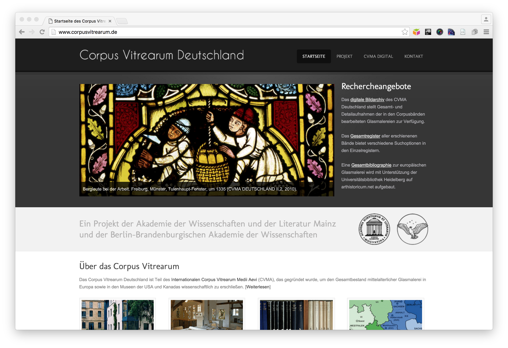

Data sets used
For the visualisations, data sets from two institutions have been used.
Epidat Epigraphical Database

Epidat - The Database of Jewish epigraphy - provides the inventory, documentation, editions and presentation of epigraphical collections. Records are released under CC-BY and are available in a wealth of formats (HTML, TEI, etc.).
Go to the website
Corpus Vitrearum Medii Aevi (Germany)

The CVMA digital image archive contains high quality fotos of medieval stained glass windows studied by the project. The images and metadata are released under CC-BY and are available as TIFF (images), XMP and JSON-LD (metadata).
Go to the website
All the stuff: CC-BY | Get it on GitHub | Website brought to you by @digicademy | Imprint